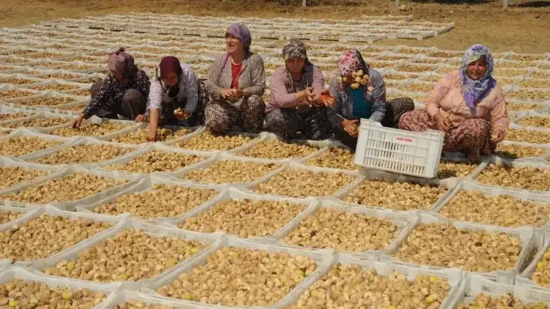

Kuru incir
Aydın’dan bütün, doğal incirler: dalında olgunlaşır, açık tepsilerde güneşte kurur ve elde boylanır.
- Sarılop çeşidi
- Aydın, Türkiye
- GTİP 0804.20

Bölgeye adını veren meyve
Sıcak günler, kurak geceler ve kireçli toprak, meyve koyu kehribar rengini alıp ortası reçel kıvamına gelene kadar şekerini yoğunlaştırır.
Aydın ve Büyük Menderes ovasında yetişen Sarılop çeşidi, dünyada kuru incirin ölçüsü kabul edilir. Hiçbir katkı yok: tatlılığın tamamı meyvenin kendisinden geliyor.
- 5–7 gün güneşte kurutma, %22–24 neme kadar dinlendirme
- Tutarlı paketler için elde altı kalibreye boylama
- Parti parti aflatoksin testi, her sevkiyatta sertifika
- Konvansiyonel ve sertifikalı organik seçenekler

Dalından kendiliğinden düşer
Bahçelerimizi tonaj yerine ağaç üzerinden sözleşmeye bağlıyoruz; böylece üretici meyveyi erken toplamak yerine kendiliğinden düşmesini bekleyebiliyor. Maliyeti daha yüksek, ama incirlerimizin bu tadı taşımasının en büyük nedeni bu.
Teknik bilgiler
Tipik değerlerdir. Her sevkiyatla birlikte aflatoksin sertifikası gönderilir.
| Botanik adı | Ficus carica, Sarılop çeşidi |
|---|---|
| Menşe | Aydın, Türkiye |
| Üretim yeri | Nazilli tesisimiz, Aydın |
| Kaliteler | Lerida, Protoben, Bağlama, Garland, Çekme, Layer, Makaroni, Küp |
| Kalibre | 1 numara (≤38 adet/kg) ile 6 numara (≤110 adet/kg) arası |
| Nem | %22–24 |
| İçindekiler | %100 kuru incir (doğal kaliteler). Kükürtsüz. |
| Hasat | Ağustos – Eylül, yıl boyu sevkiyat |
| Raf ömrü | 4–18 °C ve %65 bağıl nemde 12 ay |
| GTİP kodu | 0804.20 |
İncirin ağaçtan koliye yolculuğu
Bahçelerde, kurutma alanında ve tesiste çekilmiş 74 saniyelik anlatımlı bir film: şafakta hasat, yükseltilmiş kerevetlerde kurutma, hatta ayıklama, kamyona yükleme.
Ege bahçelerinde dalında olgunlaşan incirleri bir üretici tek tek kontrol eder. İncirler şafakta elle sepete toplanır, güneşte ve rüzgârda kurumak üzere yükseltilmiş ahşap tel kerevetlere serilir, ardından elle seçilip ahşap kasalara dizilir. Bir kamyon kasaları dağ yolundan işleme tesisine taşır; burada bone ve beyaz önlüklü bir çalışan incirleri bant üzerinde ayıklar. Film, depoda istiflenmiş kolilerle ve iple bağlanmış bir incir paketiyle biter.
Hazırladığımız tüm kaliteler
Türk kuru inciri, boyutu kadar biçimine ve sunumuna göre de alınıp satılır. Her form hem perakende birim hem de işlenmek üzere dökme olarak sunulur.
Lerida
5 kg · 10 kg koliEn üst kalitemiz. İri, açık renkli, düzgün yuvarlak preslenmiş ve tek sıra dizilmiş incirler. Hediyelik ve üst segment perakende için tercih edilen sunum.
Protoben
500 g · 5 kgElde şekillendirilen bütün incirler. Kalibre ve düzgünlükte Lerida’nın bir basamak altında, ama aynı meyve. Günlük perakende paketlerin beygiri.
Bağlama
5 kg koliPreslenip sıra sıra bağlanarak paketlenen incirler: geleneksel Ege sunumu ve hâlâ birçok toptancının adıyla istediği format.
Garland (Çelenk)
4,5 kg koliKöy evlerinin kuşaklardır sakladığı biçimde ipe dizilip halka yapılan incirler. Sezonluk ve şarküteri satışında güçlü bir ürün.
Çekme
800 g · 5 kgElde açılıp yassılaştırılan incirler; daha yumuşak bir doku ve market rafında hızlı dönen poşetli format sağlar.
Layer (Sıralı)
250 g tablaSeçilmiş incirler sığ bir tablaya yassı dizilir, böylece meyve ezilmeden ulaşır. En gösterişli küçük paketimiz; hediyelik için önerdiğimiz format.
Makaroni
5 kg · 10 kgDökme kolilerde daha küçük ve uzun incirler. Ezme, dolgu, bar ve infüzyon üreten sanayi alıcıları için fiyatlanır.
Küp 8×10 mm
10 kg dökmeFırıncılık, gevrek ve şekerleme hatları için pirinç unuyla kaplanmış, eşit kesilmiş incir küpleri. Farklı kesim ölçüleri talebe göre.

Sattığınız biçimde paketlenir
Alıcılarımız incirlerimizi atıştırmalık ve peynir tabakları, kahvaltılık gevrek ve bar, fırıncılık dolguları ve ezmeleri, şekerleme içleri, incir bazlı içecek ve infüzyonlarda kullanıyor.
Tüm kaliteler gıdaya uygun iç torbalı kolilerde sevk edilir; dökme partiler için ahşap kasa seçeneği vardır. Perakende birimler kendi etiketiniz ve barkodunuzla basılabilir.
- 200 g ve 500 g baskılı perakende doypack
- 1 kg oluklu tabla, shrink kaplı
- İç torbalı 5 kg ve 10 kg toplu tüketim kolisi
- İşlenmek üzere 12,5 kg sanayi kolisi
- Talebe göre özel marka ve hediyelik ambalaj
Karar vermeden önce deneyin
Kalibreli numune setleri, nitelikli ticari alıcılara ücretsizdir.